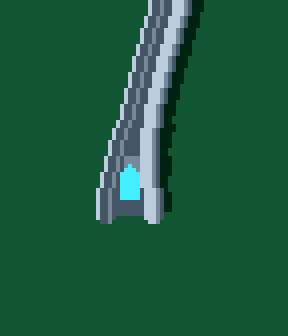
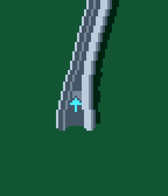
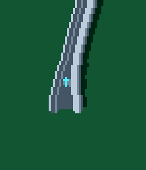
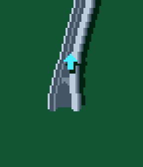
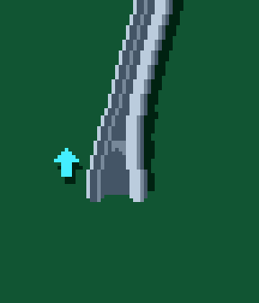

00 Current large
Painted on the floor

Actual C++ rendering and ball capture. Same short-funnel entrance, approach, speed and physics. Fixed camera; 30 frames idle, then the ball enters and completes the ramp. 00 is the current arrow. Other treatments are review previews.
Painted on the floor

5 px painted arrow

3 px arrow up the throat

Floating over the track

Keeps clear of the ball

7 px hollow floor arrow